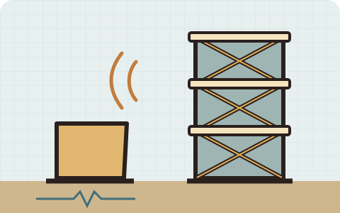

EARTH SCIENCE AND ENGINEERING · GRADES 6–8
Earthquakes & Structures
Assemble a building from components, change earthquake magnitude and site conditions, and test durability. Compare drift and acceleration to improve a design within a budget.